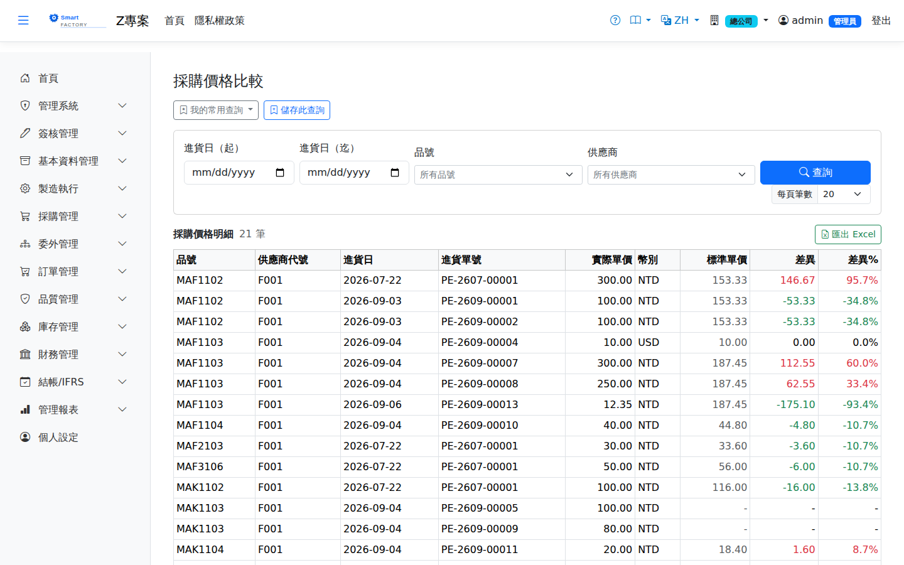

採購價格比較Purchase Price
路由：/PurchasePrice | 同品號跨供應商/跨期間價格比較Route: /PurchasePrice | Price comparison for one product across suppliers and periods
比較同一品號不同供應商與不同期間的採購單價走勢，輔助議價與供應商選擇。Compares the price trend of one product across suppliers and periods, supporting negotiation and supplier selection.

採購價格分析畫面截圖（示意，實際欄位/資料依權限與查詢條件而異）Purchase price analysis screenshot (illustrative; actual fields and data vary by permission and query criteria)
查詢Search
1
查詢列輸入條件後點「查詢」；欄位標題可點擊排序，清單下方有分頁導航。Enter your criteria on the query bar and click "Search"; column headers can be clicked to sort, and the paging controls sit below the list.
欄位說明Field reference
查詢條件Query criteria
| 條件Condition | 說明Guide |
|---|---|
| 進貨日（起 / 迄）Receipt date (from / to) | 納入比較的進貨日期區間Receipt date range included in the comparison |
| 品號 / 供應商Product / Supplier | 各自縮小查詢範圍each narrows the query scope |
報表欄位Report fields
| 欄位Field | 說明Guide |
|---|---|
| 品號 / 供應商代號Product / Supplier code | 比較對象Comparison basis |
| 進貨日 / 進貨單號Receipt Date / GR No. | 該筆進貨的日期與單號，可回溯明細Date and number of the receipt, so the detail can be traced |
| 實際單價Actual Price | 本次進貨實際成交的單價Price actually agreed for this receipt |
| 幣別Currency | 成交的交易幣別Currency of the transaction |
| 標準單價Standard price | 產品主檔設定的標準採購單價，作為比較基準The standard purchase price on the product master, used as the comparison baseline |
| 差異 / 差異%Diff / Diff% | 實際單價 － 標準單價，及其相對比率；正數代表買貴，是議價與成本控管的追蹤點Actual price − standard price and the relative percentage; a positive figure means you paid more, which is the tracking point for negotiation and cost control |
存成常用查詢Saving the query
查詢列上方有「我的常用查詢」與「儲存此查詢」，可把這一組條件存起來下次一鍵重跑。存檔時必須選一個相對期間（例如「上個月」），不是固定日期。用法與注意事項見常用查詢。Above the search bar are "My saved queries" and "Save this query", which store the current criteria for one-click reuse. You must choose a relative period when saving (for example "last month") rather than fixed dates. See saved queries for how they work and what to watch for.